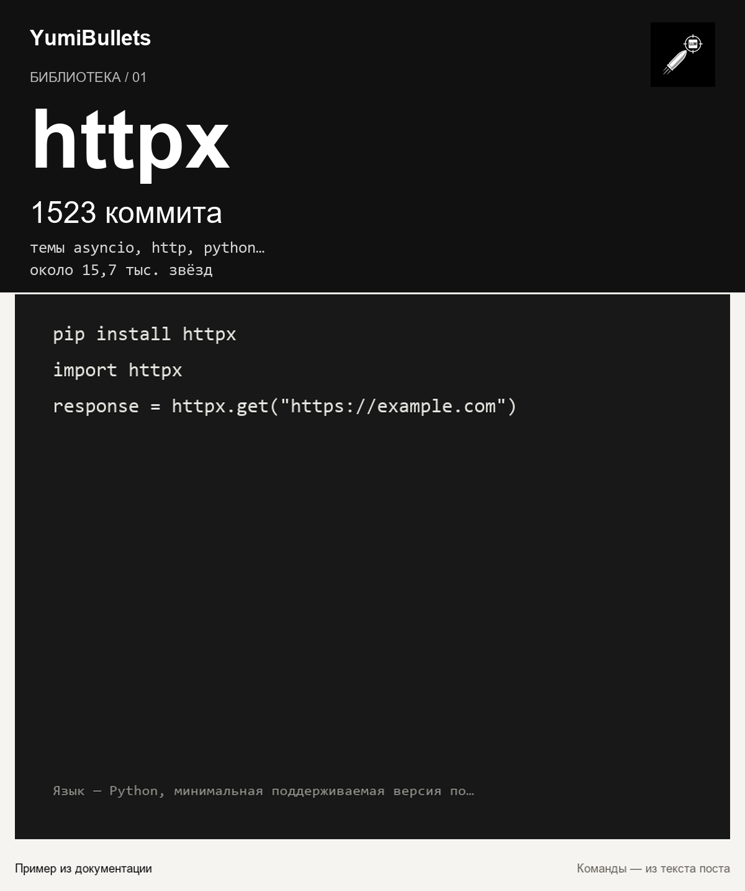

HTTPX: минимальный рабочий путь к HTTP-клиенту на Python
Выбираете HTTP-клиент для нового сервиса или тестов и не хотите заранее решать, будет ли код синхронным? Ниже — короткий практический маршрут: проверка окружения, установка,…

Выбираете HTTP-клиент для нового сервиса или тестов и не хотите заранее решать, будет ли код синхронным? Ниже — короткий практический маршрут: проверка окружения, установка,…